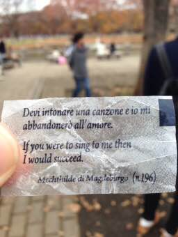
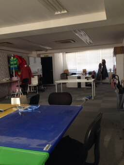

PARTICIPANTS:
DB ID: 0
Current name: You
Address book name: You
User name:
Phone Number:
Key:
DB ID: 513
Current name: ジュゼッペ
Address book name: Giuseppe DICO
User name: ジュゼッペ
Phone Number: 08048752735
Key: 080 4875 2735
DB ID: 620
Current name: ayumu Dico
Address book name: None
User name: ayumu
Phone Number:
Key:
Messages:
2014/11/08 12:47:05, "0:You":
Giuseppe DICO invited toni to the group.
2014/11/08 12:47:45, "513:ジュゼッペ":
もう恵比寿にいます。中塚さんと待ち合わせして事務所で待ってます。
2014/11/08 13:25:40, "620:ayumu Dico":
まだ引越し業者さん来てないです。
2014/11/08 13:26:22, "620:ayumu Dico":
ジュゼッペさん、お鍋は必要ですか？前に欲しいて言ってたの。
2014/11/08 13:28:57, "513:ジュゼッペ":
必要ー
2014/11/08 13:30:40, "620:ayumu Dico":
2014/11/08 13:54:20, "620:ayumu Dico":
トラックきましたー！
2014/11/08 19:20:38, "0:You":
だいたい物を片付けた。
ナイトちゃん、
いろんな会社の資料が出て来ちゃて、机の下に置いておいた。
ジュセッペ、
パソコンと鍋とセイントセイヤを机の下に置いておいた。
エミリオがその机が良くないって言うってた、みんなをリードするためにジュセッペさんが真ん中がいいって。
2014/11/08 19:59:23, "513:ジュゼッペ":
やっぱり面倒臭い席だな。皆話したり俺は真ん中になっちゃうー
皆動いたら俺に迷惑だしー
2014/11/08 19:59:35, "513:ジュゼッペ":
2014/11/08 20:16:18, "620:ayumu Dico":
エミリオさん、私にも最初場所のこと言ったけど、
”ここがいいです！”と言ったらオッケーだったからジュゼッペさんも言ったらいいよー(*^o^*)
2014/11/08 20:16:25, "620:ayumu Dico":
トニーさん、荷物ありがとう！
2014/11/08 20:17:44, "513:ジュゼッペ":
違うと思う。まあいいけど、席も自分で決めれないのはちょっと幼稚園っぽくてびっくり
2014/11/08 20:20:43, "620:ayumu Dico":
席は、マイケルさんとムンさんも自分で決めてたし、
ジュゼッペさんも言ったほうがいいよー
2014/11/08 20:21:32, "513:ジュゼッペ":
しょうがない。月曜日いないから、適当に決められる。嫌だなー
2014/11/08 20:21:34, "620:ayumu Dico":
私の、”３Fにいたい”はNGだったけどにー
2014/11/08 20:21:37, "620:ayumu Dico":
たしかに！
2014/11/08 20:21:49, "620:ayumu Dico":
そこは、トニーさんに任せるしかないね…>_<…
2014/11/08 20:22:03, "620:ayumu Dico":
ジュゼッペさんの席確保！
2014/11/08 20:22:17, "620:ayumu Dico":
2014/11/08 20:22:36, "0:You":
なんとかします。
2014/11/08 20:22:44, "620:ayumu Dico":
2014/11/08 20:22:50, "513:ジュゼッペ":
彼は何ができる？w
エミリオはこういう意味のないことに勝手だからどうしようもないよーw
2014/11/08 20:22:54, "513:ジュゼッペ":
2014/11/08 20:23:45, "620:ayumu Dico":
いや、出来るよー！
何か理由つければいいんだよ。
”ジュゼッペは煩い中だと仕事がはかどらないから、あの場所じゃないとダメだと言っていた！”とか
2014/11/08 20:23:47, "0:You":
Hypnotism, vodoo, black magic, ...
2014/11/08 20:24:09, "620:ayumu Dico":
黒魔術w
2014/11/08 20:24:17, "620:ayumu Dico":
2014/11/08 20:25:04, "0:You":
ついひじ達をだませばキープ出来ると思う
2014/11/08 20:25:15, "620:ayumu Dico":
おおあお
2014/11/08 20:25:39, "513:ジュゼッペ":
彼はだまるかな
2014/11/08 20:25:43, "513:ジュゼッペ":
2014/11/08 20:26:00, "620:ayumu Dico":
私も３Fに居れないからヘルプ出来ないけど、トニーさん頑張れ！
2014/11/08 20:26:18, "620:ayumu Dico":
ジュゼッペさんのためにー！
2014/11/08 20:26:33, "513:ジュゼッペ":
ははははいいから
2014/11/08 20:26:38, "513:ジュゼッペ":
2014/11/08 20:28:01, "0:You":
成功をしたら
KFCにおごってもらう
2014/11/08 20:28:21, "620:ayumu Dico":
2014/11/08 20:28:24, "513:ジュゼッペ":
事務所の近くにあるもんね
2014/11/08 20:28:38, "513:ジュゼッペ":
ファミリーパック買おう
2014/11/08 20:28:46, "513:ジュゼッペ":
2014/11/08 20:29:17, "620:ayumu Dico":
2014/11/09 17:43:47, "0:You":
やベー！忘れてた！
ナイトちゃん！ナイトちゃん！
2014/11/09 17:44:10, "0:You":
明日、しずかちゃんは何時にしましょうか？
2014/11/09 17:44:41, "513:ジュゼッペ":
しずかちゃんって何？
2014/11/09 17:44:53, "513:ジュゼッペ":
2014/11/09 17:44:53, "620:ayumu Dico":
何時なら大丈夫そう？
2014/11/09 17:45:17, "620:ayumu Dico":
西垣さん！ピグのイラストレーターさんで、ワンピースできるかお話するの(*^o^*)
2014/11/09 17:45:37, "0:You":
聞いてみる？
2014/11/09 17:45:59, "620:ayumu Dico":
まず西垣さんの大丈夫な時間を聞いて見ようー！
2014/11/09 17:46:15, "620:ayumu Dico":
MTGスペースで大丈夫だよね？
2014/11/09 17:46:41, "0:You":
うん！
2014/11/09 17:47:31, "620:ayumu Dico":
西垣さんからお勉強来たら教えてくださーい(*^o^*)
2014/11/09 17:47:47, "620:ayumu Dico":
2014/11/09 17:55:15, "620:ayumu Dico":
あ、
2014/11/09 17:55:34, "620:ayumu Dico":
❌お勉強
⭕️お返事
2014/11/09 17:56:02, "620:ayumu Dico":
2014/11/09 17:56:43, "0:You":
ゆるしてチョンマゲ？！ww
2014/11/09 17:58:51, "620:ayumu Dico":
良いでしょうw
2014/11/09 17:58:53, "620:ayumu Dico":
2014/11/09 18:13:40, "0:You":
しずかちゃんは16時から来れるって
2014/11/09 18:15:19, "620:ayumu Dico":
了解！では16時にしよう！
2014/11/09 18:15:30, "620:ayumu Dico":
今、エミリオさんから業務連絡が来て
2014/11/09 18:15:31, "620:ayumu Dico":
なんと
2014/11/09 18:15:44, "620:ayumu Dico":
私の席、３Fにも貰えるらしい！
2014/11/09 18:15:49, "620:ayumu Dico":
2014/11/09 18:16:27, "0:You":
okイェーイ！
2014/11/09 18:16:55, "620:ayumu Dico":
よかった(*^o^*)
イラスト案件やる時は３Fに居れるみたい(*^o^*)
2014/11/09 18:33:26, "620:ayumu Dico":
トニーさん。納品しないといけないラフが添付されているメールが、携帯のgodaddyからは見れるけど、PCのwindowsLivemailに来ないのだ。
どうしたらいいかわかる？
2014/11/09 18:33:30, "620:ayumu Dico":
2014/11/09 18:35:51, "0:You":
http://login.secureserver.net
2014/11/09 18:36:19, "0:You":
でいいよ。
それか、もちょい待ってるか。
2014/11/09 18:36:36, "620:ayumu Dico":
試してみる！
2014/11/09 18:37:35, "620:ayumu Dico":
出来た！ありがとう！
2014/11/09 18:38:02, "620:ayumu Dico":
PCに届かないのは、やはりPCの問題かもしれないから、今度見て下さい(*_*)
2014/11/09 18:38:34, "0:You":
了解です
2014/11/09 18:38:49, "620:ayumu Dico":
ありがとう！
2014/11/09 18:38:52, "620:ayumu Dico":
2014/11/09 19:01:04, "0:You":
私も昼から開発をしてて、まだまだ終わらない〜
涙。
2014/11/09 19:09:36, "620:ayumu Dico":
がんばれー(>_<)私も今フィードバック対応していたよー。頑張りましょうー！
2014/11/09 19:12:47, "0:You":
ファイティング！
2014/11/09 19:14:43, "513:ジュゼッペ":
2014/11/09 19:17:10, "620:ayumu Dico":
2014/11/09 19:18:50, "0:You":
2014/11/09 19:19:16, "620:ayumu Dico":
2014/11/11 12:45:33, "513:ジュゼッペ":
喫煙所の横に待ち合わせしよ
2014/11/11 12:46:04, "0:You":
今店に向かってる
2014/11/11 12:46:55, "513:ジュゼッペ":
どんな？
2014/11/11 12:47:05, "513:ジュゼッペ":
住所教えて
2014/11/11 12:47:32, "0:You":
voceです
住所を調べる
2014/11/11 12:47:46, "513:ジュゼッペ":
わかった
2014/11/11 12:49:03, "0:You":
http://s.tabelog.com/tokyo/A1303/A130302/13046327/
2014/11/11 12:49:51, "0:You":
Oh!失敗
2014/11/11 12:50:03, "0:You":
Tio danjo へ行く
2014/11/11 12:50:59, "0:You":
http://s.tabelog.com/tokyo/A1303/A130302/13020429/
2014/11/11 12:54:56, "0:You":
また、失敗
2014/11/11 12:55:33, "513:ジュゼッペ":
待ってくれよ
2014/11/11 12:55:41, "513:ジュゼッペ":
なんだよ
2014/11/11 12:55:49, "0:You":
上海食堂
2014/11/11 12:56:37, "0:You":
http://s.tabelog.com/tokyo/A1303/A130302/13097386/
2014/11/11 12:57:09, "0:You":
決定です
今2Fで食べてる
2014/11/13 10:59:10, "0:You":
You sent a photo.
2014/11/29 16:51:59, "620:ayumu Dico":
ayumu Dico sent you a photo.
2014/11/29 16:51:59, "620:ayumu Dico":
ayumu Dico sent you a photo.
2014/11/29 16:52:00, "620:ayumu Dico":
ayumu Dico sent you a photo.
2014/11/29 16:52:00, "620:ayumu Dico":
ayumu Dico sent you a photo.
2014/11/29 16:53:53, "513:ジュゼッペ":
2014/11/29 17:28:51, "0:You":
2014/11/30 13:57:47, "0:You":
チョコを食べたらこんなメッセージが書いてあった
2014/11/30 13:57:55, "0:You":
You sent a photo.
2014/11/30 13:58:20, "0:You":
意味はよく分かんない
2014/11/30 14:36:33, "513:ジュゼッペ":
Baci食べてるんだ
2014/11/30 14:36:46, "513:ジュゼッペ":
2014/11/30 14:37:36, "513:ジュゼッペ":
意味はね、ちょっとなんか、英語とイタリア語あまりのも違いすぎてやばい
2014/11/30 14:38:03, "513:ジュゼッペ":
誰かの詩だと思うんで
2014/11/30 14:38:36, "513:ジュゼッペ":
どういう風に訳せばいいか全てのテキスト見ないとわからないけど
2014/11/30 14:42:09, "513:ジュゼッペ":
ざっくり翻訳すると「歌い始めたら愛の世界に入れる」かな
2014/11/30 14:42:25, "620:ayumu Dico":
2014/11/30 14:42:31, "620:ayumu Dico":
ロマンチック！
2014/11/30 14:42:44, "513:ジュゼッペ":
(彼女は彼にゆってる)
2014/11/30 14:43:58, "0:You":
2014/11/30 14:44:50, "513:ジュゼッペ":
ってか、誰とデートしてんの？
2014/11/30 14:44:55, "513:ジュゼッペ":
2014/11/30 14:45:12, "620:ayumu Dico":
代々木公園？
2014/11/30 14:45:23, "0:You":
誰だろうね〜？！
2014/11/30 14:45:29, "0:You":
うん！
2014/11/30 14:45:38, "620:ayumu Dico":
紅葉キレイだもんねー！
2014/11/30 14:45:41, "513:ジュゼッペ":
ユキ？
2014/11/30 14:45:52, "620:ayumu Dico":
(ゆき？)だれ？
2014/11/30 14:45:54, "620:ayumu Dico":
笑
2014/11/30 15:11:01, "0:You":
うん！
ゆきちゃんです
2014/11/30 15:11:58, "620:ayumu Dico":
セワさんと会った人だっけ？
2014/11/30 15:19:14, "0:You":
うむ、うむ！
2014/12/06 15:30:10, "620:ayumu Dico":
こないだの写真
2014/12/06 15:30:18, "620:ayumu Dico":
ayumu Dico sent you a photo.
2014/12/06 15:30:18, "620:ayumu Dico":
ayumu Dico sent you a photo.
2014/12/06 15:30:19, "620:ayumu Dico":
ayumu Dico sent you a photo.

2014/12/06 16:11:44, "0:You":
オー、出た！
ありがとう！
2014/12/06 16:13:26, "620:ayumu Dico":
2014/12/16 12:14:33, "620:ayumu Dico":
ランチいっちゃったの？
2014/12/16 12:14:35, "620:ayumu Dico":
…>_<…
2014/12/16 12:15:03, "0:You":
まだ
2014/12/16 12:15:22, "620:ayumu Dico":
みんな居なかったから、置いてかれちゃったのかと思った…>_<…
2014/12/16 12:16:05, "0:You":
3fで待ってるよ
2014/12/16 12:16:08, "513:ジュゼッペ":
まだラン千行けない。
2014/12/16 12:16:20, "0:You":
行けないの？！
2014/12/16 12:16:40, "513:ジュゼッペ":
今は行けない。お先にどうぞ
2014/12/16 12:16:56, "620:ayumu Dico":
待ってる
2014/12/24 12:18:39, "620:ayumu Dico":
連絡遅くなってごめん(>_<)買い物したくてすでに外に出てますー！ランチ参加出来ないので、原さん誘って行ってきてね♪
2014/12/24 12:39:04, "0:You":
原ちゃんとデートになっちゃった。
500¥食べ放題に向かってる。
よかったら来てて
2014/12/24 14:41:28, "620:ayumu Dico":
今見た！気づくの遅くてごめんね(>_<)
2014/12/25 10:41:00, "0:You":
You sent a photo.
2014/12/25 10:41:16, "0:You":
昨日は家族サービス
2014/12/25 10:42:32, "513:ジュゼッペ":
2014/12/25 21:37:12, "620:ayumu Dico":